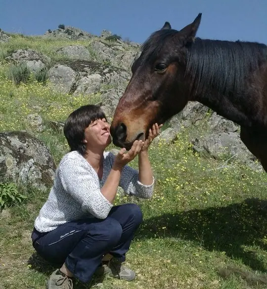

Eliges
Cuando la colección esté disponible, podrás escoger el producto que mejor encaje contigo.
Tienda solidaria
Estamos preparando una colección propia vinculada al Santuario. Mientras llega, ya puedes encontrar los libros publicados de Los Guardianes y conocer cómo será esta nueva forma de colaborar.

Cómo funcionará
La mayor parte de la futura colección se preparará bajo demanda. Así podemos empezar con prudencia y adaptar la oferta a lo que realmente tenga sentido para el Santuario.
Cuando la colección esté disponible, podrás escoger el producto que mejor encaje contigo.
Los artículos previstos para producción bajo demanda se fabricarán cuando exista un pedido.
La tienda será una vía más de apoyo al proyecto, junto a donativos, socios, padrinazgo, Teaming y voluntariado.
Colecciones
Todavía no publicamos productos, precios ni diseños hasta que estén definidos y aprobados.
Colección 01
Una línea vinculada a la identidad del Santuario, preparada para producirse sin grandes cantidades de stock.
Colección 02
El universo de Winston, Pegaso, Epona, Declan y Dolo crecerá con productos solo cuando los diseños estén aprobados.
Colección 03
Objetos útiles que puedan acompañar el día a día y, a la vez, dar visibilidad al trabajo del Santuario.
Ya publicados
Los libros son la parte de la Tienda Solidaria que ya está disponible. Precio, disponibilidad y entrega se consultan directamente en Amazon.
Edición impresa
La edición física del cuento para leer, compartir y volver a visitar la historia.
Ver en AmazonTransparencia
La colección de merchandising está todavía en preparación y se producirá principalmente bajo demanda. Esto nos permitirá comenzar sin almacenar grandes cantidades de stock.
No publicaremos productos, diseños, precios ni condiciones hasta que estén definidos. La tienda comercial se activará más adelante, cuando toda la parte de pedidos, pagos, envíos y atención esté preparada.
Más allá de una compra
La Tienda Solidaria nace para acompañar el proyecto, no para sustituirlo. Puedes descubrir el universo de Los Guardianes o conocer otras formas de ayudar directamente al Santuario.